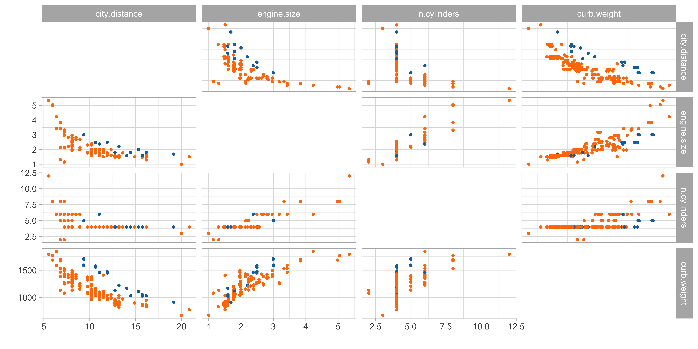
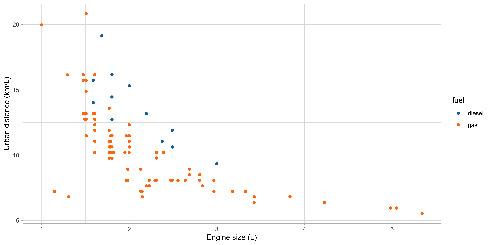
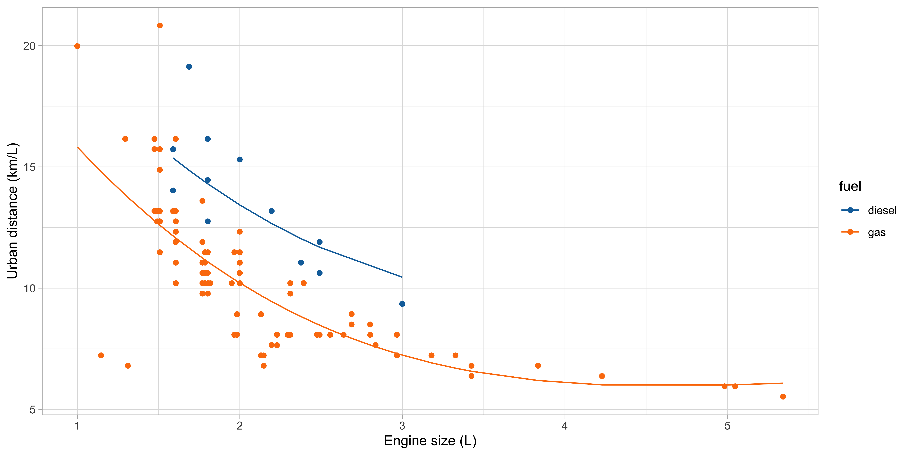
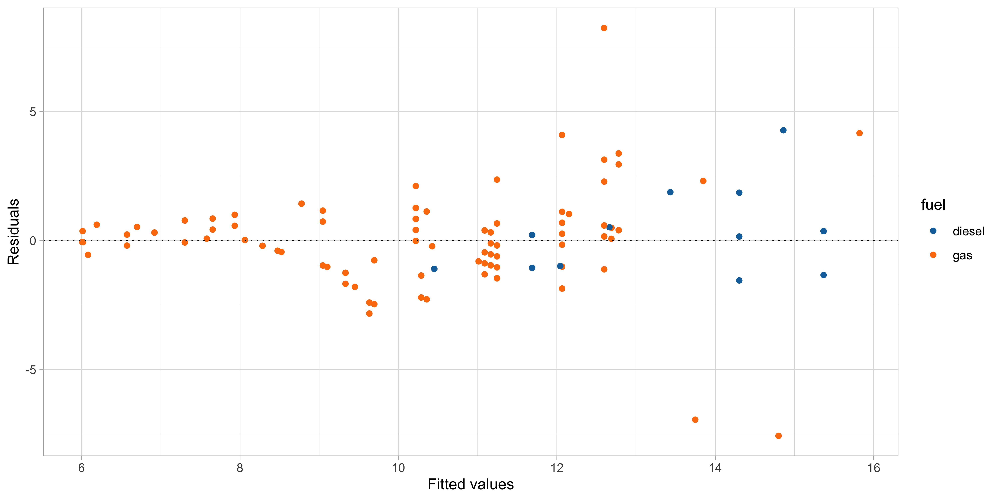
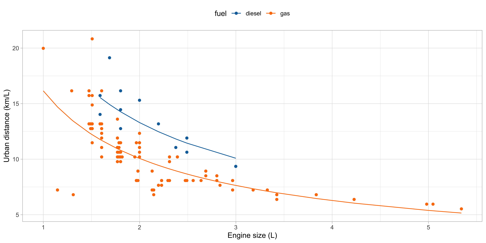
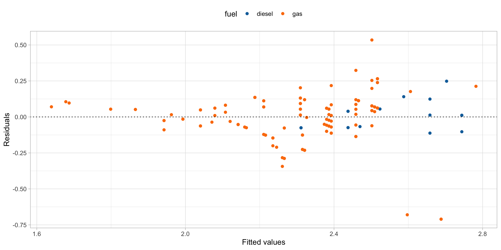
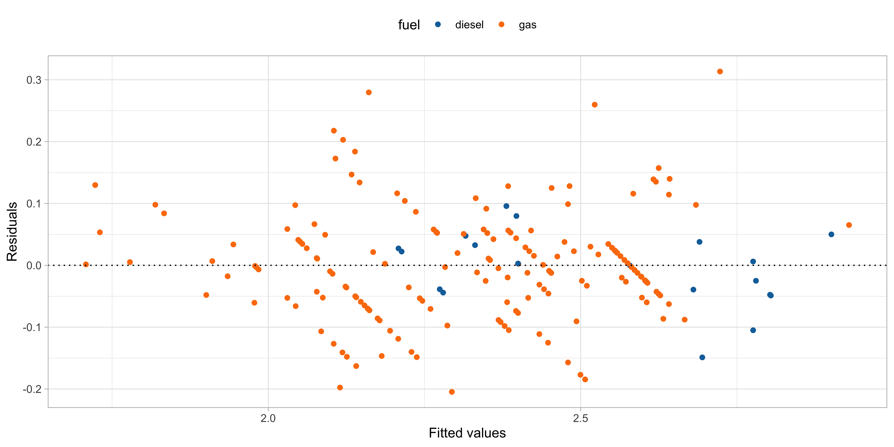

A-B-C
Data Mining - CdL CLAMSES
Tommaso Rigon
Università degli Studi di Milano-Bicocca
About this unit
 “Everything should be made as simple as possible, but not simpler” Attributed to Albert Einstein
“Everything should be made as simple as possible, but not simpler” Attributed to Albert Einstein
In this unit we will cover the following topics:
- Linear models and the modelling process
- Cholesky factorization
- Orthogonalization and QR decomposition
- Iterative methods
The computational aspects of linear models will be novel to most of you…
… but you should be already very familiar with linear models!
If do not remember much about them, use this first week of lectures to catch up (or study) from the material of previous courses.
Old friends: linear models
Car data
- We consider data for n = 203 models of cars in circulation in 1985 in the USA.
- We want to identify a relationship that allows to predict the distance covered per unit of fuel, as a function of the vehicle characteristics.
- We consider the following continuous variables:
- The city distance per unit of fuel (km/L,
city.distance) - The engine size (L,
engine.size) - The number of cylinders (
n.cylinders) - The curb weight (kg,
curb.weight)
- The city distance per unit of fuel (km/L,
- We also considered the categorical variable fuel type (gasoline or diesel,
fuel).
Car data (diesel or gas)
Linear regression
At the moment, let us focus on
city.distance(y),engine.size(x) andfuel(z).The simplest model we can come up with is a linear regression line: y_i = \beta_1 + \beta_2 x_i + \epsilon_i, \qquad i=1,\dots,n, where the “errors” \epsilon_i are iid random variables, having zero mean and variance \sigma^2.
We are looking for an estimate for the unknown regression parameters \beta_0 and \beta_1.
Such an estimate could be obtained by ordinary least squares (OLS)…
… but the next plot clearly suggests that the relationship between
city.distanceandengine.sizeis not well approximated by a linear function.… and also that
fuelhas an non-negligible effect on the response.
Scatterplot of the data

Regression models
A more general formulation for modeling the relationship between a vector of covariates (x_{i1},\dots,x_{ip})^T \in \mathbb{R}^p and a response y \in \mathbb{R} is y_i = f(x_{i1},\dots,x_{ip}; \beta) + \epsilon_i, \qquad i=1,\dots,n.
To estimate the unknown parameters \beta, a possibility is to rely on the least squares criterion: we seek the minimum of the objective function D(\beta) = \sum_{i=1}^n\{y_i - f(x_{i1},\dots, x_{ip}; \beta)\}^2, using n pairs of observations (x_{i1},\dots,x_{ip})^T and y_i, for i = 1,\dots,n.
The solution to this minimization problem is denoted by \hat{\beta}.
The predicted values \hat{y}_i are then obtained as \hat{y}_i = f(x_{i1},\dots,x_{ip}; \hat{\beta}), for i=1,\dots,n.
Linear models
We can more flexibly model
city.distance(y),engine.size(x) andfuel(z).For instance, we could consider a polynomial term combined with a dummy variable f(x, z; \beta) = \beta_1 + \beta_2 x + \beta_3 x^2 + \beta_4 x^3 + \beta_5 I(z = \texttt{gas}).
Remark. This model is linear in the parameters, but it can capture non-linear patterns!
Definition (Linear model)
In a linear model the response variable y is related to the covariates through the function f(x_1,\dots,x_p; \beta) = \beta_1 x_1 + \cdots + \beta_p x_p = \tilde{\bm{x}}^T\beta, where \tilde{\bm{x}} = (x_1, \dots,x_p)^T is a vector of covariates and \beta = (\beta_1,\dots,\beta_p)^T is the corresponding vector of coefficients.
Matrix notation
The response values are collected in the vector \bm{y} = (y_1,\dots,y_n)^T.
The design matrix is a n \times p matrix, comprising the covariate’s values, defined by \bm{X} = \begin{bmatrix} x_{11} & \cdots & x_{1p}\\ \vdots & \ddots & \vdots \\ x_{n1} & \cdots & x_{np} \end{bmatrix}.
The linear model can be written using the compact notation: \bm{y} = \bm{X}\beta + \bm{\epsilon}, where \bm{\epsilon} = (\epsilon_1,\dots,\epsilon_n)^T is a vector of iid error terms with zero mean and variance \sigma^2.
The jth variable (column) is denoted with \bm{x}_j, whereas the ith observation (row) is \tilde{\bm{x}}_i: \bm{X} = (\bm{x}_1,\dots,\bm{x}_p) = (\tilde{\bm{x}}_1, \dots,\tilde{\bm{x}}_n)^T.
Linear regression: estimation I
- The optimal set of coefficients \hat{\beta} is the minimizer of the least squared criterion D(\beta) = (\bm{y} - \bm{X}\beta)^T(\bm{y} - \bm{X}\beta) = ||\bm{y} - \bm{X}\beta||^2, known also as residual sum of squares (RSS), where ||\bm{y}|| = \sqrt{y_1^2 + \cdots + y_n^2}.
Least square estimate (OLS)
If the design matrix has full rank, that is if \text{rk}(\bm{X}^T\bm{X}) = p, then the least square estimate has an explicit solution: \hat{\beta} = (\bm{X}^T\bm{X})^{-1}\bm{X}^T \bm{y}.
Linear regression: estimation II
Consequently, the predicted values are \hat{\bm{y}} = \bm{X}\hat{\beta} = \bm{H}\bm{y}, \qquad \bm{H} = \bm{X}(\bm{X}^T\bm{X})^{-1}\bm{X}^T.
\bm{H} is a n \times n projection matrix matrix sometimes called hat matrix.
It can be shown that \text{tr}(\bm{H}) = \text{rk}(\bm{H}) = p. Moreover, it holds \bm{H} = \bm{H}^T and \bm{H}^2 = \bm{H}.
The quantity D(\hat{\beta}) is the deviance, which is equal to D(\hat{\beta}) = ||\bm{y} - \hat{\bm{y}}||^2 = \bm{y}^T(I_n - \bm{H})\bm{y}.
A typical estimate for the residual variance \sigma^2 is then given by s^2 = \frac{D(\hat{\beta})}{n - p} = \frac{1}{n-p}\sum_{i=1}^n(y_i - \tilde{\bm{x}}_i^T\hat{\beta})^2.
Linear regression: inference
Let us additionally assume that the errors follow a Gaussian distribution: \epsilon_i \overset{\text{iid}}{\sim} N(0, \sigma^2).
This implies that the distribution of the estimator \hat{\beta} is \hat{\beta} \sim N_p(\beta, \sigma^2 (\bm{X}^T\bm{X})^{-1}).
Hence, the estimator \hat{\beta} is unbiased and its variance can be estimated by \widehat{\text{var}}(\hat{\beta}) = s^2 (\bm{X}^T\bm{X})^{-1}.
The standard errors of the components of beta correspond to the square root of the diagonal of the above covariance matrix.
Confidence interval and Wald’s tests can be obtained through classical inferential theory.
Car data, a preliminary model
A first model to predict
city.distance(y) viaengine.size(x) andfuel(z) is f(x, z; \beta) = \beta_1 + \beta_2 x + \beta_3 x^2 + \beta_4 x^3 + \beta_5 I(z = \texttt{gas}).By looking at the plot of the data, it is plausible that we need a polynomial of degree 3 or 4
It is also clear from the plot that
fuelis a relevant variable. Categorical variable should be encoded using indicator variables.To evaluate the goodness of fit, we can calculate the coefficient of determination: R^2 = 1 - \frac{\text{(``Residual deviance'')}}{\text{(``Total deviance'')}} = 1 - \frac{\sum_{i=1}^n (y_i - \hat{y}_i)^2}{\sum_{i=1}^n(y_i - \bar{y})^2}.
A first model: estimated coefficients
- We obtain the following summary for the regression coefficients \hat{\beta}.
| term | estimate | std.error | statistic | p.value | conf.low | conf.high |
|---|---|---|---|---|---|---|
| (Intercept) | 28.045 | 3.076 | 9.119 | 0.000 | 21.980 | 34.110 |
| engine.size | -10.980 | 3.531 | -3.109 | 0.002 | -17.943 | -4.016 |
| I(engine.size^2) | 2.098 | 1.271 | 1.651 | 0.100 | -0.409 | 4.604 |
| I(engine.size^3) | -0.131 | 0.139 | -0.939 | 0.349 | -0.406 | 0.144 |
| fuelgas | -3.214 | 0.427 | -7.523 | 0.000 | -4.057 | -2.372 |
- The coefficient R^2 and s are estimated as follows:
| r.squared | sigma | deviance |
|---|---|---|
| 0.5973454 | 1.790362 | 634.6687 |
A first model: fitted values

A first model: graphical diagnostics

Variable transformation
A major advantage of linear models is that they can exploit non-linear relationship via variable transformations.
This gives the statistician a lot of modelling flexibility, for instance:
\log{y_i} = \beta_1 + \beta_2 \log{x_i} + \beta_3 I(z_i = \texttt{gas}) + \epsilon_i, \qquad i=1,\dots,n.
- This specification is linear in the parameters, it fixes the domain issues, and imposes a monotone relationship between engine size and consumption.
| term | estimate | std.error | statistic | p.value | conf.low | conf.high |
|---|---|---|---|---|---|---|
| (Intercept) | 3.060 | 0.047 | 64.865 | 0 | 2.967 | 3.153 |
| I(log(engine.size)) | -0.682 | 0.040 | -17.129 | 0 | -0.760 | -0.603 |
| fuelgas | -0.278 | 0.038 | -7.344 | 0 | -0.353 | -0.203 |
Second model: fitted values

Second model: graphical diagnostics

Comments and criticisms
- The goodness of fit indices are the following:
| r.squared.original | r.squared | sigma | deviance |
|---|---|---|---|
| 0.5847555 | 0.6196093 | 0.1600278 | 5.121777 |
- Apple and oranges: the R^2 must be computed and compared using the same scale!
This second model is more parsimonious and yet it reaches similar predictive performance.
It is also more coherent with the nature of the data: the predictions cannot be negative and the relationship between engine size and the consumption is monotone.
There is still some heteroschedasticity in the residuals — is this due to a missing covariate that has not been included into the model?
A third model: additional variables
- Let us consider two additional variables:
curb.weight(w) andn.cylinders(v). A modified model could be: \log{y_i} = \beta_1 + \beta_2 \log{x_i} + \beta_3 \log{w_i} + \beta_4 I(z_i = \texttt{gas}) + \beta_5 I(v_i = 2) + \epsilon_i, for i=1,\dots,n.
| term | estimate | std.error | statistic | p.value | conf.low | conf.high |
|---|---|---|---|---|---|---|
| (Intercept) | 9.423 | 0.482 | 19.549 | 0.000 | 8.472 | 10.373 |
| I(log(engine.size)) | -0.180 | 0.051 | -3.504 | 0.001 | -0.281 | -0.079 |
| I(log(curb.weight)) | -0.943 | 0.072 | -13.066 | 0.000 | -1.085 | -0.800 |
| fuelgas | -0.353 | 0.022 | -15.934 | 0.000 | -0.396 | -0.309 |
| cylinders2TRUE | -0.481 | 0.052 | -9.301 | 0.000 | -0.584 | -0.379 |
A third model: graphical diagnostics

Comments and criticisms
- The goodness of fit greatly improved:
| r.squared.original | r.squared | sigma | deviance |
|---|---|---|---|
| 0.869048 | 0.8819199 | 0.0896089 | 1.589891 |
We took care of the outliers, which it turns out are identified by the group of cars having 2 cylinders.
The diagnostic plots are also very much improved, although still not perfect.
The estimates are coherent with our expectations, based on common knowledge. Have a look at the textbook (A&S) for a detailed explaination about \beta_4!
Cholesky factorization
How to obtain the least squares estimate?
In undergraduate courses it is often suggested that the least square estimate should be computed using the formula \hat{\beta} = (\bm{X}^T\bm{X})^{-1}\bm{X}^T \bm{y}, that is, using the R code
solve(t(X) %*% X) %*% t(X) %*% y.This is theoretically correct and it works reasonably well in many simple cases.
However, in realistic problems, when we have a lot of data (large n) and correlated variables, the above code is computationally inefficient and numerically inaccurate.
The main computational bottleneck is about obtaining the inverse of \bm{X}^T\bm{X}, which is very costly and often numerically unstable, especially when the predictors are almost collinear.
The normal equations
Consider the following system of equations (normal equations): \bm{X}^T\bm{X} \beta = \bm{X}^T \bm{y}.
This system could be solved using
solve(crossprod(X), crossprod(X, y)).The above R command avoids the computation of (\bm{X}^T\bm{X})^{-1} and it is preferable compared to the “direct solution”. However, it does not exploit the properties of the matrix \bm{X}^T\bm{X}.
Proposition A.1
Suppose \bm{X} \in \mathbb{R}^{n \times p} with n \ge p has full rank, that is \text{rk}(\bm{X}) = p. Then, the matrix \bm{X}^T\bm{X} is symmetric and positive definite.
Cholesky factorization
- Recall (from your favorite linear algebra textbook) that a symmetric matrix \bm{A} \in \mathbb{R}^{p \times p} is positive definite if and only if one the following properties is satisfied
- The quadratic form \bm{x}^T \bm{A} \bm{x} > 0 for all \bm{x} \in \mathbb{R}^p such that \bm{x} \neq 0.
- The eigenvalues \lambda_1,\dots,\lambda_p of \bm{A} are all strictly positive.
Theorem (Cholesky factorization)
Let \bm{A} \in \mathbb{R}^{p \times p} be a symmetric and positive definite matrix. Then, there exists a unique upper triangular p \times p matrix \bm{R} with positive entries such that \bm{A} = \bm{R}^T\bm{R}.
Cholesky factorization and least squares
Let \bm{R}^T\bm{R} be the Cholesky factorization of the matrix \bm{X}^T\bm{X}. Then, the normal equations can be written as \bm{R}^T\bm{R} \beta = \bm{X}^T \bm{y}, which can be can be solved in two steps.
Step 1 (Forwardsolve). Solve with respect to z the system of equations \bm{R}^T z = \bm{X}^T \bm{y}.
Step 2 (Backsolve). Given z, now solve with respect to \beta the system of equations \bm{R} \beta = z.
Forward and backward substitutions
The solution of triangular systems is straightforward.
As an example, consider the following 3 \times 3 lower triangular system: \begin{bmatrix} l_{11} & 0 & 0 \\ l_{21} & l_{22} & 0 \\ l_{31} & l_{32} & l_{33} \\ \end{bmatrix} \begin{bmatrix} x_1 \\ x_2 \\ x_3 \end{bmatrix} = \begin{bmatrix} b_1 \\ b_2 \\ b_3 \end{bmatrix}.
The solution for x_1,x_2,x_3 can be found sequentially: x_1 = \frac{b_1}{l_{11}}, \qquad x_2 = \frac{b_2 - l_{21}x_1}{l_{22}}, \qquad x_3 = \frac{b_3 - l_{31}x_1 - l_{32}x_2}{l_{33}}.
Finding the inverse \bm{R}^{-1} is simple, again because \bm{R} is upper triangular. Also note that (\bm{X}^T \bm{X})^{-1} = (\bm{R}^T \bm{R})^{-1} = \bm{R}^{-1} (\bm{R}^{-1})^T.
Computational complexity
The solution via Cholesky factorization is a fast direct approach for finding \hat{\beta}.
The expensive steps are:
- The formation of the matrix \bm{X}^T\bm{X} requires \sim n p^2 elementary operations
- The Cholesky factorization of \bm{X}^T\bm{X} requires \sim p^3 / 3 elementary operations.
This gives an overall computational complexity of order \sim n p^2 + p^3 /3, which corrects the typographical error of the A&S textbook.
This means that in high-dimensional settings (large p) computations become rapidly very costly, since the complexity is cubic in p.
☠️ - Error propagation in normal equations
The normal equations method is typically quicker than other algorithms, as it removes the dependency on n, but it is in general numerically more unstable.
Consider for example the following matrix: \bm{X} = \begin{bmatrix}1 & 1 \\ \epsilon & 0 \\ 0 & \epsilon \end{bmatrix}, for a small value \epsilon > 0. Then, we obtain that \bm{X}^T \bm{X} = \begin{bmatrix}1 + \epsilon^2& 1 \\ 1 & 1 + \epsilon^2 \end{bmatrix}.
The numerical computation of \epsilon^2 in \bm{X}^T\bm{X} requires a higher precision compared to \epsilon, leading to numerical instabilities and/or a loss in accuracy.
☠️ - Condition numbers and normal equations
Suppose \bm{X} \in \mathbb{R}^{n \times p} with n \ge p has full rank and singular values d_1 \ge d_2 \ge \dots \ge d_p. Then its condition number is \kappa(\bm{X}) = ||\bm{X}|| \cdot ||\bm{X}^+|| = \frac{d_1}{d_p}, where \bm{X}^+ is the Moore-Penrose pseudo-inverse. Note that \kappa(\bm{X}) \ge 1.
If \kappa(\bm{X}) is small, the matrix \bm{X} is well conditioned. Otherwise, we say it is ill conditioned.
The condition number determines how accurately we can solve linear systems.
An important fact is: \kappa(\bm{X}^T\bm{X}) = \kappa(\bm{X})^2, implying that there is a clear loss of numerical accuracy when using normal equations.
The QR decomposition
Orthogonal predictors
When the predictors are mutually orthogonal, the problem is significantly simpler.
In other words, consider a linear model of the form \bm{y} = \bm{Z}\bm{\beta} + \bm{\epsilon}, where \bm{Z} = (\bm{z}_1,\dots,\bm{z}_p). Orthogonality means that \bm{Z}^T\bm{Z} = \text{diag}(\bm{z}_1^T\bm{z}_1,\dots,\bm{z}_p^T\bm{z}_p).
Proposition A.2. OLS with orthogonal predictors
The least square estimate \hat{\bm{\beta}} = (\hat{\beta}_1,\dots,\hat{\beta}_p)^T of a linear model with orthogonal predictors is
\hat{\gamma}_j = \frac{\bm{z}_j^T\bm{y}}{\bm{z}_j^T\bm{z}_j}, \qquad j=1,\dots,p.
Regression by successive orthogonalization
- The predictors of \bm{X} are generally not orthogonal. We want to find a suitable transformation \bm{Z} = \bm{X} \bm{\Gamma}^{-1} that orthogonalize the predictors.
Suppose for example that p = 2. We set first orthogonal predictor \bm{z}_1 = \bm{x}_1.
We then consider the following univariate regression problem \bm{x}_2 = \gamma \bm{z}_1 + \bm{\epsilon}, \qquad \text{which leads} \qquad \hat{\gamma} = \frac{\bm{z}_1^T\bm{x}_2}{\bm{z}_1^T\bm{z}_1}.
The second orthogonal predictor is obtained as the residual term: \bm{z}_2 = \bm{x}_2 - \hat{\gamma}\bm{z}_1.
The geometry of linear models guarantees that \bm{z}_1^T\bm{z}_2 = 0.
Gram-Schmidt algorithm
Let us now consider the general case, for any value of p.
Initialization. Set \bm{z}_1 = \bm{x}_1.
For j= 2,\dots,p. Consider the regression problem with j-1 orthogonal predictors \bm{x}_j = \sum_{k=1}^{j-1}\gamma_{kj} \bm{z}_k + \bm{\epsilon}_j, \quad \text{which leads} \quad \hat{\gamma}_{kj} = \frac{\bm{z}_k^T\bm{x}_j}{\bm{z}_k^T\bm{z}_k}, \quad k=1,\dots,j-1, Then, compute the new vector \bm{z}_j as the residual term \bm{z}_j = \bm{x}_j - \sum_{k=1}^{j-1}\hat{\gamma}_{kj} \bm{z}_k
The geometry of linear models guarantees orthogonality, that is \bm{z}_j^T \bm{z}_{j'} = 0 for any j \neq j'.
The QR decomposition I
By construction, the Gram-Schmidt algorithm produces the following decomposition \bm{X} = \bm{Z} \bm{\Gamma}, \qquad \bm{\Gamma} = \begin{bmatrix} 1 & \hat{\gamma}_{12} & \hat{\gamma}_{13} &\cdots & \hat{\gamma}_{1p} \\ 0 & 1 & \hat{\gamma}_{23} &\cdots & \hat{\gamma}_{2p} \\ \vdots & \vdots & \vdots &\ddots & \vdots\\ 0 & 0 & 0 & \cdots & 1 \end{bmatrix}, \qquad \bm{Z} = (\bm{z}_1,\dots,\bm{z}_p).
The p \times p matrix \bm{\Gamma} is upper triangular, whereas the columns of the n \times p matrix \bm{Z} are mutually orthogonal.
It is often convenient to standardize the columns of \bm{Z}, dividing them by their norm ||\bm{z}_j||. Let \bm{D} = \text{diag}(||\bm{z}_1||, \dots, ||\bm{z}_p||), then in matrix notation: \bm{X} = \bm{Z} \bm{\Gamma} = \bm{Z} \bm{D}^{-1} \bm{D} \bm{\Gamma} = \bm{Q} \bm{R}, \quad \text{with} \quad \bm{Q} = \bm{Z}\bm{D}^{-1}.
Remark. Note that \bm{Q}^T \bm{Q} = I_p, i.e. the columns of \bm{Q} are orthonormal.
The QR decomposition II
Theorem (QR factorization)
Suppose \bm{X} \in \mathbb{R}^{n \times p} with n \ge p has full rank, that is \text{rk}(\bm{X}) = p. Then there exists a factorization of the form \bm{X} = \bm{Q} \bm{R}, where \bm{Q} \in \mathbb{R}^{n \times p} has orthonormal columns and \bm{R} \in \mathbb{R}^{p \times p} is an upper triangular matrix.
Corollary (QR factorization)
The QR decomposition is unique up to sign flips of the columns of \bm{Q} and the rows of \bm{R}. Moreover, if \bm{R} has positive diagonal entries, as the one obtained using Gram-Schmidt, then it coincides with the Cholesky factor of \bm{X}^T\bm{X}.
The QR decomposition and least squares
The QR decomposition greatly facilitates computations for linear models. Indeed: \begin{aligned} \hat{\beta} &= (\bm{X}^T\bm{X})^{-1}\bm{X}^T\bm{y} = [(\bm{Q}\bm{R})^T\bm{Q}\bm{R}]^{-1}(\bm{Q}\bm{R})^T\bm{y}\\ &= (\bm{R}^T\bm{Q}^T\bm{Q}\bm{R})^{-1}\bm{R}^T\bm{Q}^T\bm{y} \\ &= \bm{R}^{-1} (\bm{R}^T)^{-1} \bm{R}^T\bm{Q}^T\bm{y} \\ &= \bm{R}^{-1}\bm{Q}^T \bm{y}. \end{aligned}
Hence, the least square estimate is obtained as the solution of the triangular system \bm{R}\beta = \bm{Q}^T\bm{y}, which can be easily solved via backward substitution.
As a special case of the above equation, one gets \hat{\beta}_p = (\bm{z}_p^T\bm{y}) / (\bm{z}_p^T \bm{z}_p).
The QR decomposition and linear models
An important advantage of the QR factorization is that many other useful quantities can be readily computed. For example, the covariance matrix is obtained as: s^2 (\bm{X}^T \bm{X})^{-1} = s^2 \bm{R}^{-1} (\bm{R}^{-1})^T.
The predicted values and the projection matrix are also easily obtained as \hat{\bm{y}} = \bm{H}\bm{y} = \bm{Q}\bm{Q}^T\bm{y}.
The diagonal elements h_i = [\bm{H}]_{ii} of the hat matrix \bm{H} are called leverages and one may want to compute them without evaluating the full n \times n matrix, using h_i = \sum_{j=1}^p q_{ij}^2, \qquad i=1,\dots,n, where q_{ij} are the entries of \bm{Q}.
Computational complexity
The solution via QR factorization is numerically reliable and it facilitates the computation of other quantities of interest.
In practice, the QR is computed via a modified Gram-Schmidt, that fixes the instabilities of the naïve Gram-Schmidt algorithm, or via Householder reflections.
The expensive step is the QR factorization itself. This gives an overall computational complexity of order \sim 2 n p^2 which is about twice that of the Cholesky, when n is much larger than p, and about the same when p \approx n.
Depending on the context, we may prefer the Cholesky or the QR. The default approach in R, i.e. the one implemented in the
lmfunction, is the QR factorization.
☠️ - Pivoting and rank deficiencies
If \text{rk}(\bm{X}) = k < p (rank deficiency) then it is still possibile to obtain a “QR” factorization of the form \bm{X}\bm{P} = \bm{Q}\begin{bmatrix}\bm{R}_{11} & \bm{R}_{12} \\ 0 & 0\end{bmatrix}, where \bm{P} is a p × p permutation matrix and \bm{R}_{11} is an k \times k upper triangular and non-singular matrix.
This operation is sometimes called pivoting and it is particularly important even when \text{rk}(\bm{X}) = p to prevent numerical issues when the condition number \kappa(\bm{X}) is high.
In presence of perfect collinarity, the implementation of the QR decomposition in R (
qr) relies on pivoting. This is why thelmfunction is able to automatically “omit” a predictor.
Iterative methods
When n is very large…
When the sample size n is extremely large, as it is common in data mining problems, then the QR factorization cannot be computed.
Indeed, even loading \bm{X} into memory could be problematic.
In the normal equations approach, we only need to compute the sufficient statistics: \bm{W} = \bm{X}^T\bm{X}, \qquad \bm{u} = \bm{X}^T\bm{y}, which are of dimension p\times p and p \times 1, respectively.
Using \bm{W} and \bm{u} one can obtain the least square estimate \hat{\beta} using the Cholesky factorization.
However, when n is extremely large, the difficult part is indeed computing \bm{W} and \bm{u}!
Recursive data import
Using matrix notation, we express \bm{W} = \bm{W}_{(n)} and \bm{u} = \bm{u}_{(n)} as follows \bm{W}_{(n)} = \sum_{i=1}^n \tilde{\bm{x}}_i \tilde{\bm{x}}_i^T, \qquad \bm{u}_{(n)} = \sum_{i=1}^n\tilde{\bm{x}}_i y_i.
Let us define the initial conditions \bm{W}_{(1)} = \tilde{\bm{x}}_1 \tilde{\bm{x}}_1^T and \bm{u}_{(1)} = \tilde{\bm{x}}_1 y_1.
Then, the following recursive relationship holds: \bm{W}_{(i)} = \bm{W}_{(i-1)} + \tilde{\bm{x}}_i \tilde{\bm{x}}_i^T, \qquad \bm{u}_{(i)} = \bm{u}_{(i-1)} + \tilde{\bm{x}}_i y_i, \qquad i=2,\dots,n, where \bm{W}_{(i)} is the matrix formed by the first i summands of \bm{W}_{(n)} and analogously \bm{u}_{(i)}.
Hence \bm{W}_{(n)} and \bm{u}_{(n)} can be calculated by importing a single record at a time, which does not create memory issues.
Recursive estimates
In many occasions, the data flow continuously, meaning that we get a new pair of observations (\tilde{\bm{x}}_{n+1}, y_{n+1}) every minute, or even every second.
We would like to update the current least square estimate \hat{\beta}_{(n)} with the new information (\tilde{\bm{x}}_{n+1}, y_{n+1}), but ideally without re-doing all the calculations.
The recursive data import of the previous slide is partially unsatisfactory, because one would need to invert (or factorize) a p \times p matrix every time, which could be costly.
Let us define some useful quantity: \bm{V}_{(n)} = \bm{W}_{(n)}^{-1} = (\bm{X}_{(n)}^T\bm{X}_{(n)})^{-1}, where \bm{X}_{(n)} denotes the design matrix with n observations and analogously \bm{y}_{(n)}.
Sherman-Morrison formula
When the new data points arrive, we can write the updated quantities \bm{X}_{(n+1)} = (\bm{X}_{(n)}, \tilde{\bm{x}}_{(n + 1)})^T, \quad \bm{W}_{(n + 1)} = (\bm{X}_{(n+1)}^T\bm{X}_{(n + 1)}) = (\bm{X}_{(n)}^T\bm{X}_{(n)} + \tilde{\bm{x}}_{(n + 1)} \tilde{\bm{x}}_{(n + 1)}^T).
The difficult part is to efficiently compute \bm{V}_{(n+1)} = \bm{W}_{(n + 1)}^{-1}. The following result of linear algebra is of incredible help in this regard.
Sherman-Morrison formula
Let \bm{A} \in \mathbb{R}^{p\times p} be an invertible matrix and let \bm{b},\bm{d} be p-dimensional vectors. Then (\bm{A} + \bm{b} \bm{d}^T)^{-1} = \bm{A}^{-1} - \frac{1}{1 + \bm{d}^T \bm{A}^{-1}\bm{b}}\bm{A}^{-1}\bm{b}\bm{d}^T\bm{A}^{-1}.
The recursive least squares algorithm I
Using the Sherman-Morrison formula, then we can express the new matrix \bm{V}_{(n + 1)} as a function of previously computed quantities: \bm{V}_{(n + 1)} = \bm{V}_{(n)} - v_{(n)}\bm{V}_{(n)} \tilde{\bm{x}}_{(n + 1)}\tilde{\bm{x}}_{(n + 1)}^T \bm{V}_{(n)}, \quad v_{(n)} = \frac{1}{(1 + \tilde{\bm{x}}_{(n + 1)}^T \bm{V}_{(n)}\tilde{\bm{x}}_{(n + 1)})}.
The updated least square estimate therefore becomes \begin{aligned} \hat{\beta}_{(n+1)} &= \bm{V}_{(n + 1)}(\bm{X}_{(n)}^T\bm{y}_{(n)} + \tilde{\bm{x}}_{(n + 1)} y_{n+1}) \\ &=\hat{\beta}_{(n)} + \underbrace{v_{(n)} \bm{V}_{(n)}\tilde{\bm{x}}_{(n + 1)}}_{k_n}\underbrace{(y_{n+1} - \tilde{\bm{x}}_{(n + 1)}^T\hat{\beta}_{(n)})}_{e_{n + 1}} \\ &= \hat{\beta}_{(n)} + k_n e_{n+1}. \end{aligned}
The quantity e_{n+1} is the prediction error of y_{n+1} based on the previous estimate \hat{\beta}_{(n)}.
The recursive least squares algorithm II
The recursive estimation \hat{\beta}_{(n+1)} = \hat{\beta}_{(n)} + k_n e_{n+1} takes the form of a linear filter, in which the new estimate \hat{\beta}_{(n+1)} is obtained by modifying the old one \hat{\beta}_{(n+1)}.
This is performed according to the prediction error \epsilon_{n+1} and the gain k_n of the filter.
Using a terminology typical of the machine learning field, we say that the estimator “learns from its errors”.
If n is sufficiently high, it is also possible to get an approximate solution by initializing the algorithm by setting \bm{V}_{(0)} = I_p, to avoid any matrix inversion / factorization.
- With further algebraic steps, we also obtain a recursive formula for the deviance
||\bm{y}_{(n + 1)} - \bm{X}_{(n+1)}\hat{\beta}_{(n+1)}||^2 = ||\bm{y}_{(n + 1)} - \bm{X}_{(n)}\hat{\beta}_{(n)}||^2 + v_{(n)} e_{n+1}^2.
- The full algorithm is provided in A&S, Algorithm 2.2.
References
References
- Main references
- Chapter 2 of Azzalini, A. and Scarpa, B. (2011), Data Analysis and Data Mining, Oxford University Press.
- Chapter 3 of Hastie, T., Tibshirani, R. and Friedman, J. (2009), The Elements of Statistical Learning, Second Edition, Springer.
- Specific references
- Chapters 1–3 of Quarteroni, A., Sacco, R., and Saleri F. (2007). Numerical mathematics. Second Edition, Springer.
- Chapters 1–5 of Golub, G.H., and Van Loan, C.F. (1983). Matrix computations. Hopkins University Press.

Comments and criticisms
The overall fit seems satisfactory at first glance, especially if we aim at predicting the urban distance of cars when average engine size (i.e., between 1.5L and 3L).
However, the plot of the residuals r_i = y_i - \hat{y}_i suggests that there the homoschedasticity assumption, i.e. \text{var}(\epsilon_i) = \sigma^2, might be violated.
Also, this model in not suitable for extrapolation. Indeed:
It has no grounding in physics or engineering, which leads to difficulties in the interpretation of the trend and/or paradoxical situations.
For example, the curve of the set of gasoline cars shows a local minimum around 4.6 L and then rises again!